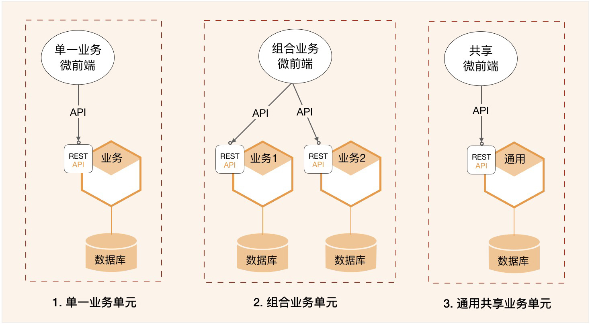
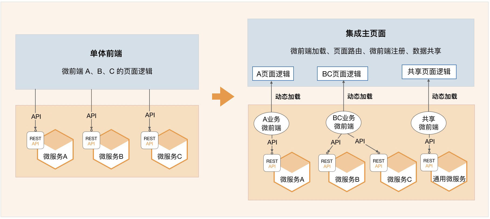
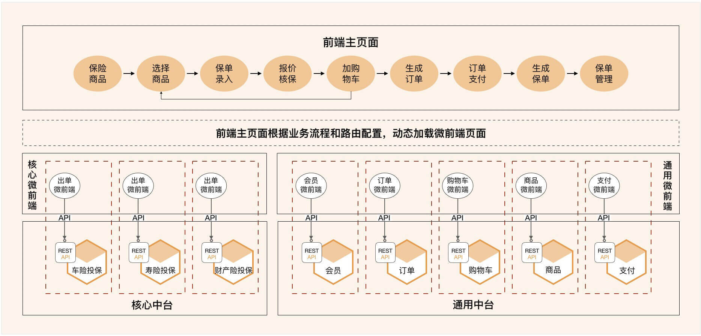

- 00 开篇词 学好了DDD，你能做什么？.md.html
- 01 领域驱动设计：微服务设计为什么要选择DDD.md.html
- 02 领域、子域、核心域、通用域和支撑域：傻傻分不清？.md.html
- 03 限界上下文：定义领域边界的利器
- 04 实体和值对象：从领域模型的基础单元看系统设计.md.html
- 05 聚合和聚合根：怎样设计聚合？.md.html
- 06 领域事件：解耦微服务的关键.md.html
- 07 DDD分层架构：有效降低层与层之间的依赖.md.html
- 08 微服务架构模型：几种常见模型的对比和分析.md.html
- 09 中台：数字转型后到底应该共享什么？.md.html
- 10 DDD、中台和微服务：它们是如何协作的？.md.html
- 11 DDD实践：如何用DDD重构中台业务模型？.md.html
- 12 领域建模：如何用事件风暴构建领域模型？.md.html
- 13 代码模型（上）：如何使用DDD设计微服务代码模型？.md.html
- 14 代码模型（下）：如何保证领域模型与代码模型的一致性？.md.html
- 15 边界：微服务的各种边界在架构演进中的作用？.md.html
- 16 视图：如何实现服务和数据在微服务各层的协作？.md.html
- 17 从后端到前端：微服务后，前端如何设计？.md.html
- 18 知识点串讲：基于DDD的微服务设计实例.md.html
- 19 总结（一）：微服务设计和拆分要坚持哪些原则？.md.html
- 20 总结（二）：分布式架构关键设计10问.md.html
- 答疑：有关3个典型问题的讲解.md.html
- 结束语 所谓高手，就是跨过坑和大海.md.html
17 从后端到前端：微服务后，前端如何设计？
你好，我是欧创新。
微服务架构通常采用前后端分离的设计方式。作为企业级的中台，在完成单体应用拆分和微服务建设后，前端项目团队会同时面对多个中台微服务项目团队，这时候的前端人员就犹如维修电工一样了。
面对如此多的微服务暴露出来的 API 服务，如何进行正确的连接和拼装，才能保证不出错？这显然不是一件很容易的事情。而当服务出现变更时，又如何通知所有受影响的项目团队，这里面的沟通成本相信也不小。
相应的，要从一定程度上解决上述问题，我们是不是可以考虑先有效降低前端集成的复杂度呢？先做到前端聚合，后端解耦——这是一个很有意思的话题。今天我们就一起来聊聊微前端（Micro Frontend）的设计思想，探讨一下中台微服务后，前后端的设计和集成方式。
单体前端的困境
传统企业在完成中台转型后，虽然后台的业务完成了微服务架构的升级，但前端仍然是单体模式，由一个团队创建并维护一个前端应用。随着时间推移和业务发展，前端会变得越来越臃肿，越来越难维护。而随着 5G 和移动互联技术的应用，企业业务活动将会进一步移动化和线上化。过去很多企业的做法是为不同的业务开发出独立的 APP。但很显然用户并不想装那么多的 APP！
为了提高用户体验，实现统一运营，很多企业开始缩减和整合 APP，将企业内所有的业务能力都尽量集中到一个 APP 中。试想如果仍然沿用单体前端的设计模式。前端项目团队将面对多个中台微服务团队，需要集成成千上万的 API 服务，这就需要相当高的沟通成本和技术要求。这绝对会是一场灾难。
相对互联网企业而言，传统企业的渠道应用更加多样化，有面向内部人员的门店类应用、面向外部客户的互联网电商平台或移动 APP，还有面向第三方的 API 集成。由于渠道的差异，前端将更加多样化和复杂化。那如何有效降低前端集成的复杂度呢？
从单体前端到微前端
为了解决单体前端的问题，我们可以借鉴微服务的设计思想，引入微前端概念。将微服务理念扩展到前端，解决中台微服务化后，前端由于仍为单体而存在的逻辑复杂和臃肿的问题。
在前端设计时我们需要遵循单一职责和复用原则，按照领域模型和微服务边界，将前端页面进行拆分。同时构建多个可以独立部署、完全自治、松耦合的页面组合，其中每个组合只负责特定业务单元的 UI 元素和功能，这些页面组合就是微前端。
微前端与微服务一样，都是希望将单体应用，按照规则拆分，并重组为多个可以独立开发、独立测试、独立部署和独立运维，松耦合的微前端或者微服务。以适应业务快速变化及分布式多团队并行开发的要求。
微前端页面只包括业务单元前端操作必需的页面要素，它只是企业级完整业务流程中的一个业务拼图块，不包含页面导航等内容。微前端除了可以实现前端页面的解耦外，还可实现页面复用，这也与中台服务共享理念是一脉相承的。
业务单元的组合形态
我们可以参照领域模型和微服务边界，建立与微服务对应的前端操作界面，将它与微服务组成业务单元，以业务组件的方式对外提供服务。业务单元包括微前端和微服务，可以独立开发、测试、部署和运维，可以自包含地完成领域模型中部分或全部的业务功能。
我们看一下下面这个图。一个虚框就是一个业务单元，微前端和微服务独立部署，业务单元内的微前端和微服务已完成前后端集成。你可以将这个业务单元理解为一个特定业务领域的组件。业务单元可以有多种组合方式，以实现不同的业务目标。

1. 单一业务单元
一个微前端和一个微服务组成单一业务单元。微前端和微服务分别实现同一个领域模型从前端到后端的功能。
2. 组合业务单元
一个微前端与多个微服务组成组合业务单元。微前端具有多个微服务的前端功能，完成较复杂的页面和操作。多个微服务实现各自领域模型的功能，向微前端提供可组合的服务。
记住一点：微前端不宜与过多的微服务组合，否则容易变成单体前端。
3. 通用共享业务单元
一个微前端与一个或多个通用中台微服务组合为通用共享业务单元。通用共享微前端以共享页面的方式与其它微前端页面协作，完成业务流程。很多通用中台微服务的微前端是共享的，比如订单和支付等微服务对应的订单和支付微前端界面。
所有业务单元的功能都应该自包含，业务单元之间的边界清晰。业务单元之间要避免功能交叉而出现耦合，一旦出现就会影响项目团队职责边界，进而影响到业务单元独立开发、测试、部署和运维等。
微前端的集成方式
我们看一下下面这个图，微前端位于前端主页面和微服务之间，它需要与两者完成集成。

1. 微前端与前端主页面的集成
前端主页面是企业级的前端页面，微前端是业务单元的前端页面。微前端通过主页面的微前端加载器，利用页面路由和动态加载等技术，将特定业务单元的微前端页面动态加载到前端主页面，实现前端主页面与微前端页面的“拼图式”集成。
微前端完成开发、集成和部署后，在前端主页面完成微前端注册以及页面路由配置，即可实现动态加载微前端页面。
2. 微前端与微服务的集成
微前端与微服务独立开发，独立部署。在微前端注册到前端主页面前，微前端需要与微服务完成集成。它的集成方式与传统前后端分离的集成方式没有差异。微服务将服务发布到 API 网关，微前端调用发布在 API 网关中的服务，即完成业务单元内的前后端集成。
团队职责边界
当你采用业务单元化的开发方式后，前后端项目团队职责和应用边界会更清晰，可以降低前后端集成的复杂度。我们看一下前中台团队的职责分工。
前端项目团队专注于前端集成主页面与微前端的集成，完成前端主页面的企业级主流程的页面和流程编排以及微前端页面的动态加载，确保主流程业务逻辑和流程正确。前端项目除了要负责企业内页面风格的整体风格设计、业务流程的流转和控制外，还需要负责微前端页面动态加载、微前端注册、页面路由和页面数据共享等前端技术的实现。
中台项目团队完成业务单元组件的开发、测试和集成，确保业务单元内的业务逻辑、页面和流程正确，向外提供包含页面逻辑和业务逻辑的业务单元组件。
这样，前端项目团队只需要完成企业级前端主页面与业务单元的融合，前端只关注前端主页面与微前端页面之间的集成。这样就可以降低前端团队的技术敏感度、团队的沟通成本和集成复杂度，提高交付效率和用户体验。
中台项目团队关注业务单元功能的完整性和自包含能力，完成业务单元内微服务和微前端开发、集成和部署，提供业务单元组件。这样，业务单元的微前端与微服务的集成就会由一个中台团队完成，熟悉的人干熟悉的事情，可以降低集成过程中的沟通和技术成本，加快开发效率。
一个有关保险微前端设计的案例
保险公司有很多面向不同场景的保险产品，由于业务场景不同，其核心领域模型就会有差异，在页面要素、业务规则和流程等方面前端界面也会不同。为了避免领域模型差异较大的产品之间的相互影响和干扰，我们可以将相似的领域模型的保险产品聚合在一起，完成核心中台设计。
那有的保险集团为了统一运营，会实现寿险、财险等集团化的全险种销售。这样前端项目团队就需要用一个前端应用，集成非常多的不同产品的核心中台微服务，前端应用与中台微服务之间的集成将会更复杂。
如果仍然采用传统的单体前端模式，将会面临比较大的困难。
第一是前端页面开发和设计的复杂性。以录单前端为例，如果用一个前端页面来适配全险种，由于不同产品的前端页面要素不同，需要妥协并兼容所有产品界面的差异，这会增加前端开发的复杂度，也影响用户体验。而如果为每类产品开发不同的前端，前端项目团队需要在页面开发和设计上，投入巨大的工作量。
第二是前端与微服务集成的复杂性。在前端与微服务集成时，前端项目团队需要了解所有产品的 API 详细信息，完成前端与微服务的集成，还要根据主页面流程，实现不同产品的 API 服务路由。大量的 API 服务集成和服务路由，会增加系统集成的复杂度和出错的概率。
第三是前后端软件版本的协同发布。关联的应用多了以后，一旦某一个中台微服务的 API 服务出现重大调整，就需要协调所有受影响的应用同时完成版本发布，频繁的版本发布会影响不同产品的正常运营。
那如何用一个前端应用实现全险种产品销售呢？怎样设计才能降低集成的复杂度，实现前端界面融合，后端中台解耦呢？
我们看一下下面这个图。我们借鉴了电商的订单模式实现保险产品的全险种订单化销售，在一个前端主页面可以将所有业务流程和业务操作无缝串联起来。虽然后端有很多业务单元（包含微服务和微前端），但用户始终感觉是在一个前端应用中操作。
要在一个前端应用中实现全险种销售，需要完成以下内容的设计。

1. 微服务
微服务分为两类，一类是核心中台微服务，包括：投保微服务，实现核心出单业务逻辑；另一类是通用中台微服务，包括如：商品、订单、购物车和支付等微服务，实现通用共享业务逻辑。
2. 微前端
每个微服务都有自己的微前端页面，实现领域模型的微服务前端页面操作。核心中台投保微服务有出单微前端。订单、商品以及支付微服务都有自己的微前端页面。
3. 业务单元
微服务与微前端组合为一个业务单元。由一个中台团队完成业务单元的开发、集成、测试和部署，确保业务单元内页面操作和业务逻辑正确。比如：投保微服务和出单微前端组合为投保业务单元，独立完成保险产品从前端到后端的投保业务。
4. 前端主页面
前端主页面类似门户，包括页面导航以及部分通用的常驻主页面的共享页面，比如购物车。前端主页面和所有微前端应统一界面风格，符合统一的前端集成规范。按照正确的业务逻辑和规则，动态加载不同业务单元的微前端页面。前端主页面作为一个整体，协调核心和通用业务单元的微前端页面，完成业务操作和业务流程，提供全险种销售接触界面，包括商品目录、录单、购物车、订单、支付等操作。
5. 业务流程说明
我来简要说明一下用户在前端主页面的投保的主要业务流程。
第 1 步：用户在前端主页面，从商品目录微前端页面，选择保险产品。
第 2 步：前端主页面根据选择的产品，从主页面配置数据中，获取产品出单微前端路由地址。加载出单微前端页面，完成录单，投保微服务实现投保业务逻辑，在业务单元内生成投保单。
第 3 步：加载购物车微前端，将投保单加入购物车。
第 4 步：重复 1-3 步，生成多个投保单。
第 5 步：从购物车微前端中选择多个投保单，加载订单微前端，生成订单。
第 6 步：加载支付微前端，完成支付。
第 7 步：在投保微服务中，将订单中的投保单生成保单。
虽然后端有很多业务单元在支持，但用户所有的页面操作和流转是在一个前端主页面完成的。在进行全险种的订单化销售时，用户始终感觉是在操作一个系统。这种设计方式很好地体现了前端的融合和中台的解耦。
总结
今天我们主要探讨了微前端的设计方法。虽然微前端和微服务也采用前后端分离的设计方式，但在业务单元内，它们是在同一个领域模型下，分别实现前端和后端的业务逻辑，对外提供组件化的服务。
微前端和业务单元化的设计模式可以减轻企业级中台，前后端应用开发和集成的复杂度，真正实现前端融合和中台解耦。它的主要价值和意义如下：
**1. 前端集成简单：**前端项目只需关注前端集成主页面与微前端的集成，实现模块化集成和拼图式的开发，降低前端集成的复杂度和成本。
**2. 项目职责专一：**中台项目从数据库、中台微服务到微前端界面，端到端地完成领域逻辑功能开发，以业务组件的方式整体提供服务。在业务单元内，由团队自己完成前后端集成，可以降低开发和集成团队的沟通成本和集成复杂度。
**3. 隔离和依赖性：**业务单元在代码、逻辑和物理边界都是隔离的，可降低应用之间的依赖性。出现问题时可快速定位和修复，问题可以控制在一个业务单元内。业务单元之间相互无影响。
**4. 降低沟通和测试成本：**中台团队实现从微前端页面到中台微服务的业务单元逻辑，实现业务单元的开发、测试、集成和部署的全流程和全生命周期管理，降低前后端集成的测试和沟通成本。
**5. 更敏捷地发布：**业务单元之间有很好的隔离性和依赖性低，业务单元的变化都可以被控制在业务单元内。项目团队可以独立按照自己的步调进行迭代开发，实现更快的发布周期。版本发布时不会影响其它业务单元的正常运行。
**6. 降低技术敏感性：**前端项目关注前端主页面与微前端的集成。降低了前端项目团队对中台微服务技术的敏感性。中台项目团队可以更独立地尝试新技术和架构，实现架构的演进。
**7. 高度复用性：**微前端和中台微服务都有高度的复用性。微前端可快速加载到多个 APP，还可以将一个微前端直接发布为 APP 或微信小程序，实现灵活的前端组合、复用和快速发布。